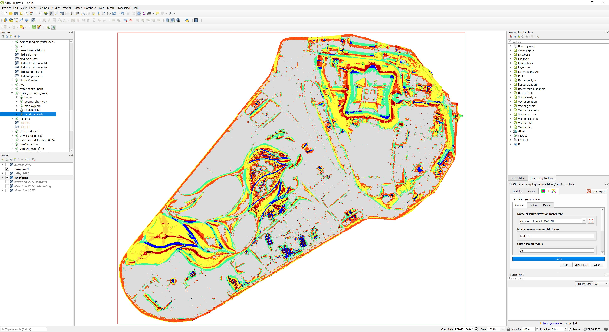
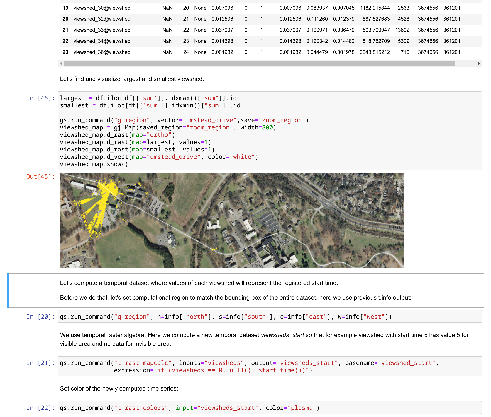
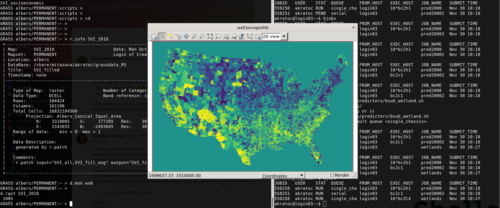
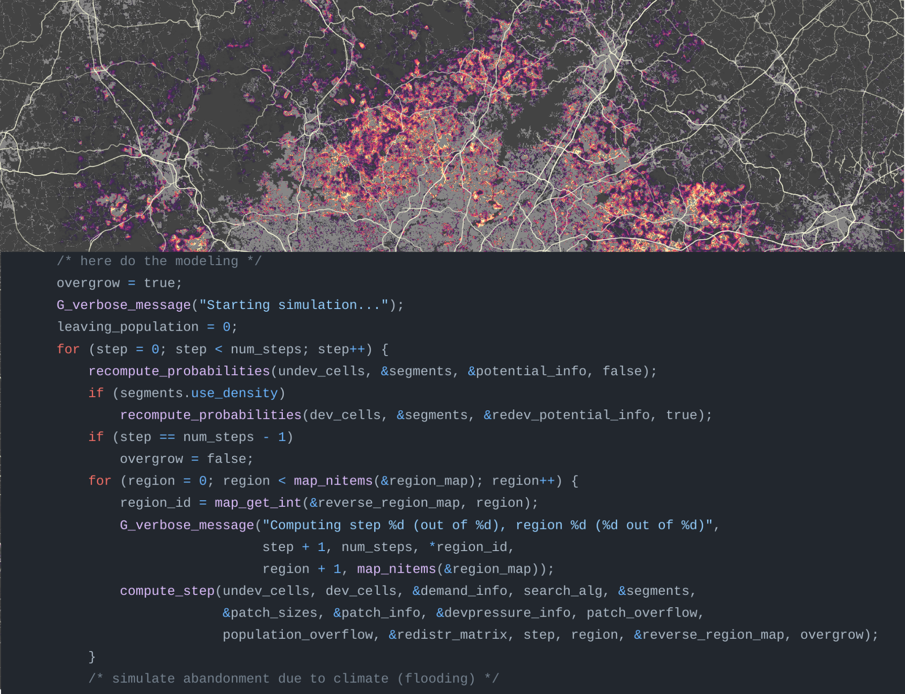
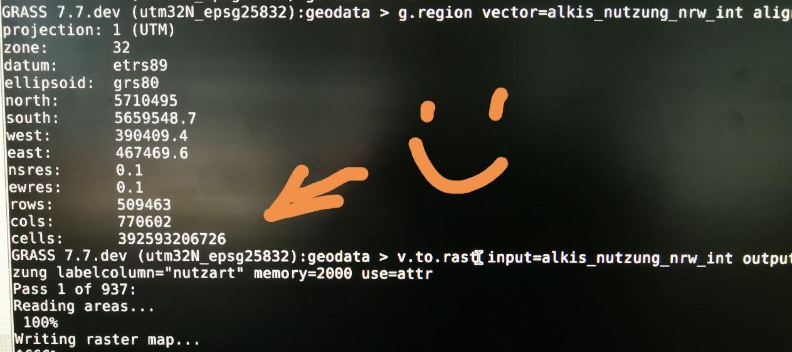

Boost Spatial Data Science Workflows with GRASS GIS and R
Veronica Andreo and the GRASS GIS community
NCSU GeoForAll Lab
at the
Center for Geospatial Analytics
NC State University

useR! Conference, Salzburg, July 8-11, 2024
Who am I
- Visiting scholar at NC State's Center for Geospatial Analytics
- Lic. & PhD in Biology, MSc in Applications of the Spatial Information
- Researcher & lecturer at Gulich Institute
- GRASS GIS: Development Team, PSC chair
- OSGeo: Charter member

What is GRASS GIS?
What is GRASS GIS?
Geek open-source command line GIS

What is GRASS GIS?
Open-source desktop GIS

What is GRASS GIS?
Processing backend in QGIS
 Image source: baharmon.github.io/grass-in-qgisWhat is GRASS GIS?
Geovisualization and data analytics tool in R or quarto notebooks

What is GRASS GIS?
Geovisualization and data analytics tool in Python notebooks
What is GRASS GIS?
Geoprocessing engine running in an HPC environment
What is GRASS GIS?
Geospatial platform for developing custom models
What is GRASS GIS?
Cloud geoprocessing backend
 Image source: neteler.gitlab.io/actinia-introduction/
Image source: neteler.gitlab.io/actinia-introduction/
GRASS is all of that!
Robustness, Innovation with Stability, Versatility, Scientific foundations
Why using GRASS?
Mature and robust geoprocessing engine with unique tools for diverse applications
Many already parallelized tools
- Core tools: r.series, r.texture, r.horizon, r.neighbors, r.patch, r.mfilter, r.slope.aspect, r.sun, v.surf.rst, r.sim.sediment, r.sim.water, most temporal tools
- Addon tools: r.flowaccumulation, r.sun.daily, r.in.usgs, r.mapcalc.tiled, t.rast.what.aggr, r.connectivity.corridors, r.viewshed.exposure, and several more
-
Parallelizing custom Python scripts:
- Data parallelization: GridModule
- Task parallelization: multiprocessing, ParallelModuleQueue

Multi-threading with OpenMP
- More tasks done in parallel in the same tool
nprocsspecifies number of cores (processes, threads)memoryspecifies RAM in MB- Performance section in documentation describes the behavior

HPC ready
- Recipes for High Performance Computing setups
- Better integration with conda environments
- Reduced potential for race conditions
- Easier to create parallel workflows
 by Vaclav Petras, Markus Neteler, Nicklas Larsson, …
by Vaclav Petras, Markus Neteler, Nicklas Larsson, …
Optimized for large data
Streamlined access to data of different sources
Automated download and import of common datasets i.eodag, i.sentinel, i.modis, i.landsat, r.in.usgs, r.in.nasadem, m.crawl.thredds, t.rast.import.netcdf, t.stac (on the way), …

by Fondazione Edmund Mach, OpenGeoLabs, mundialis GSoC, NC State University, CONICET, Norwegian Institute for Nature Research, …
R packages using GRASS in the background
- hydrographr: ollection of R function wrappers for GDAL and GRASS GIS functions to efficiently work with Hydrography90m and spatial biodiversity data.
- rdwplus: implementation of the IDW-PLUS (inverse distance weighted percent land use for streams) algorithm with GRASS GIS tools.
- fasterRaster: handle large-in-memory/large-on-disk spatial rasters and vectors in R through GRASS GIS using rgrass as a backend.
R packages interfacing with GRASS
- qgisprocessing: provide an R interface to the geoprocessing algorithms of QGIS.
- link2GI: functions to connect to common open source GI software packages. It supports both the use of wrapper packages and direct API-use via system calls.
- rgrass: interpreted interface between GRASS GIS and R, based on starting R from within the GRASS GIS environment, or running free-standing R in a temporary or existing GRASS location; the package provides facilities for using all GRASS commands from the R command line.
How to use GRASS and R through rgrass bridge
The main functions within **rgrass** are the following:
initGRASS(): starts a GRASS session from RexecGRASS(): executes GRASS commands from Rread_VECT()andread_RAST(): read vector and raster maps from a GRASS project into Rwrite_VECT()andwrite_RAST(): write vector and raster objects from R into a GRASS project
Access the full stack of tools and extensions in GRASS GIS from R!!
How to use GRASS and R through rgrass bridge
Choose your own adventure

Use GRASS GIS tools within your R spatial workflows
- Create a temporary GRASS project with the raster or vector map you want to process with GRASS
- Write the R map object into GRASS project
- Run the desired GRASS tool(s)
- Export the results back to R or your disk
Use GRASS GIS tools within your R spatial workflows
Assuming we have a terra SpatRast object, r, within our R session:
library(rgrass)
initGRASS(home = tempdir(), SG = r, override = TRUE)
write_RAST(r, "terra_elev")
execGRASS("r.slope.aspect", elevation = "terra_elev", slope = "slope", aspect = "aspect")
grass_maps <- read_RAST(c("aspect", "slope"))
Use R tools within GRASS GIS workflows
- From R, start GRASS within your project
- Read vector or raster data from GRASS into R
- Do your analysis, modeling, visualizations
- Optionally write vector and raster outputs back into GRASS
Use R tools within GRASS GIS workflows
grassdata <- path.expand("~/grassdata/")
project <- "nc_basic_spm_grass7"
mapset <- "PERMANENT"
initGRASS(gisDbase = grassdata, location = project, mapset = mapset, override = TRUE, remove_GISRC= TRUE)
execGRASS("g.list", parameters = list(type="raster"))
read_RAST()
# ... plot, use for some analysis, get outputs
write_RAST()
Use R tools within GRASS GIS workflows: an example
Resources
- Documentation:
- Tutorials (my three favorites):
Support
- Community support
- Commercial support
Take home messages
- Let's (re)use the best tools available for the tasks at hand
- Let's focus on enhancing bridges!

Ask a question, get a special sticker
veroandreo@gmail.com
veroandreo.github.io/grass-gis-talks
Funded by NSF award 2303651